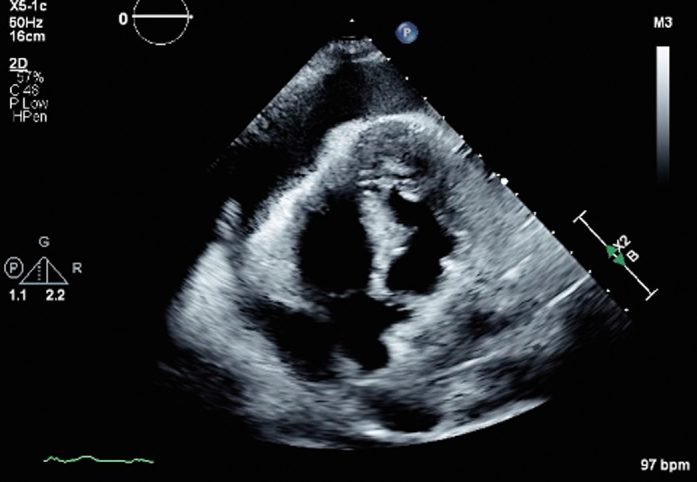

Ficha del catálogo
Taponamiento cardiaco
- Sistema
- Cardiovascular
- Modalidad
- US
- Región
- Tórax
- Dificultad
- Intermedio
Es la situación en la que el líquido acumulado en el saco pericárdico eleva la presión intrapericárdica lo suficiente para impedir el llenado de las cavidades y reducir el gasto cardiaco. Es un diagnóstico clínico y hemodinámico, no una simple cuestión de volumen, ya que un derrame pequeño de instauración rápida puede producirlo mientras que uno grande y lento puede tolerarse. Constituye una urgencia que exige drenaje.
Técnica
El ecocardiograma junto a la cama del paciente es la exploración de elección porque valora en tiempo real el derrame, el colapso de cavidades y el comportamiento respiratorio de los flujos. La tomografía suele ser el estudio que descubre el derrame en pacientes con trauma o disección aórtica. El drenaje percutáneo se realiza guiado por ultrasonido.
Qué observar
- Cuantía y distribución del derrame y presencia de tabiques o coágulos
- Colapso diastólico de la aurícula derecha y del ventrículo derecho
- Vena cava inferior dilatada con escasa variación respiratoria
- Variación respiratoria exagerada de las velocidades de llenado transvalvulares
- Movimiento oscilante del corazón dentro del saco pericárdico
- Signos indirectos en la tomografía como aplanamiento del ventrículo derecho y reflujo de contraste a la cava
Hallazgos
Se identifica un derrame pericárdico que rodea el corazón junto a signos de compromiso hemodinámico, principalmente la invaginación de la pared libre de las cavidades derechas durante la diástole. La vena cava inferior aparece plétorica y no colapsa con la inspiración. Los flujos de entrada mitral y tricuspídeo muestran variaciones respiratorias muy marcadas. En la tomografía se observan aplanamiento del ventrículo derecho y reflujo de contraste hacia el sistema venoso.
Perlas
El volumen del derrame no define el taponamiento, ya que la velocidad de acumulación es la variable determinante; por eso un hemopericardio pequeño y agudo en un trauma o en una disección puede comprometer la vida mientras que un derrame crónico voluminoso se tolera con pocos síntomas.
Diagnóstico diferencial
- Derrame pericárdico sin compromiso hemodinámico
- No hay colapso de cavidades derechas ni plétora de la cava ni variación respiratoria exagerada.
- Pericarditis constrictiva
- El pericardio está engrosado o calcificado, el derrame es escaso y el cuadro es crónico.
- Tromboembolia pulmonar masiva
- Hay dilatación del ventrículo derecho sin derrame significativo y defectos en las arterias pulmonares.
- Neumotórax a tensión
- Existe desviación mediastínica con hiperclaridad hemitorácica y ausencia de derrame pericárdico.
Simuladores
- Almohadilla grasa epicárdica anterior que simula derrame
- Derrame pleural izquierdo adyacente al corazón
- Colapso auricular breve y fisiológico en pacientes hipovolémicos
Por modalidad
- US
- Permite valorar en tiempo real el derrame y los signos de compromiso hemodinámico y guiar el drenaje.
- TC
- Detecta el derrame, mide su densidad para sugerir hemopericardio y muestra signos indirectos de compromiso.
Protocolo
Ecocardiograma con ventanas subcostal, paraesternal y apical, valorando el derrame en varios planos, el colapso de cavidades derechas en modo M o en tiempo real y el calibre de la vena cava inferior. Se registran los flujos transvalvulares con Doppler pulsado durante varios ciclos respiratorios. La tomografía se solicita cuando se busca la causa o se sospecha disección o trauma.
Clasificación
Errores frecuentes
- Basar el diagnóstico solo en la cuantía del derrame
- Confundir la grasa epicárdica anterior con líquido
- No valorar la vena cava inferior ni la variación respiratoria de los flujos

taponamiento pericardio colapso diastólico vena cava inferior ecocardiograma urgencia pericardiocentesis